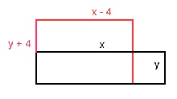

Lineare Gleichungssysteme Aufgabe 97 Ein Rechteck hat einen Umfang von 42 cm. Verkürzt man die eine Seite um 4 cm und verlängert die andere um 4 cm, so entsteht ein 4 cm² kleineres Rechteck. Wie groß sind die ursprünglichen Rechteckseiten in cm? x längere Seite in cm y kürzere Seite in cm U = 2 * x + 2 * y 2 * x + 2 * y = 42 (1) längere Seite um 4 cm verkürzt x - 4 kürzere Seite um 4 cm verlängert y + 4  Flächeninhalt des alten Rechtecks x * y Flächeninhalt des neuen Rechtecks (x - 4)(y + 4) Das alte Rechteck ist größer x * y = (x - 4)(y + 4) + 4 xy = xy + 4x - 4y - 16 + 4 | -xy 0 = 4x - 4y - 12 | +12 4x - 4y = 12 (2) (1) * 2 + (2) 4x + 4y = 84 4x - 4y = 12 8x = 96 |:8 x = 12 cm x = 12 in (1) eingesetzt 2 * 12 + 2 *y = 42 | -24 2y = 18 | :2 y = 9 cm